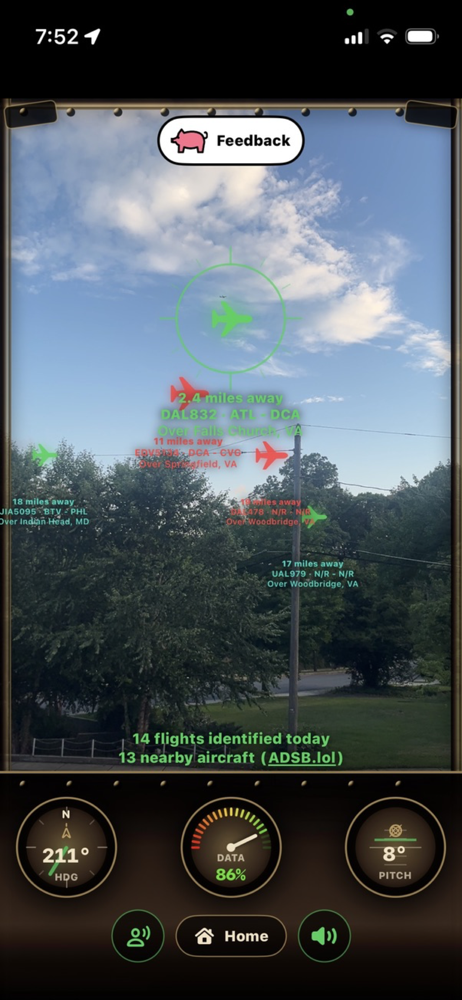
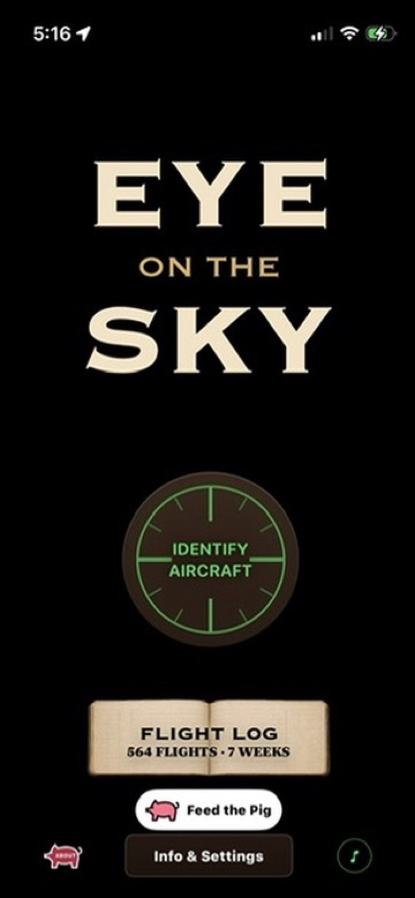
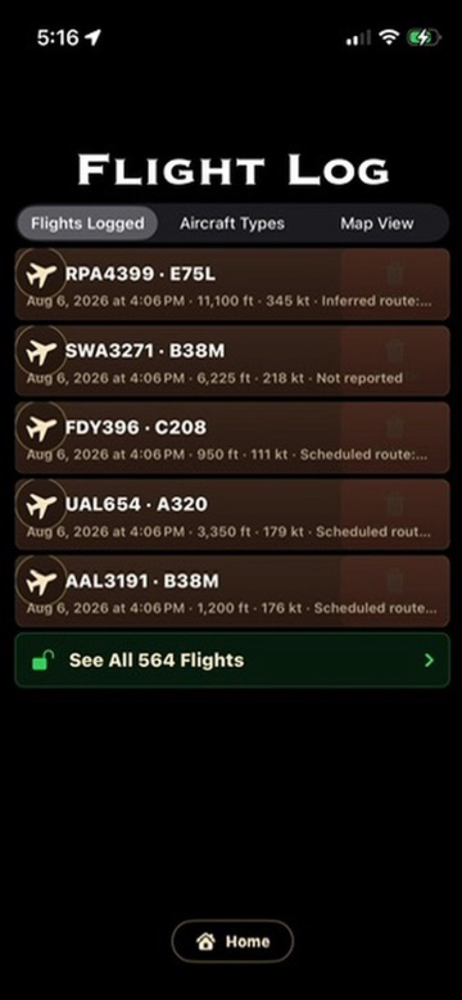
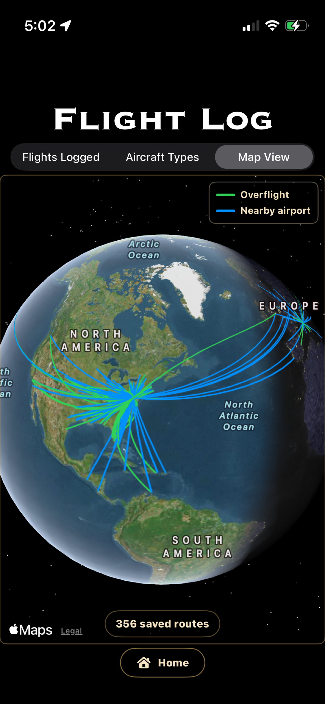
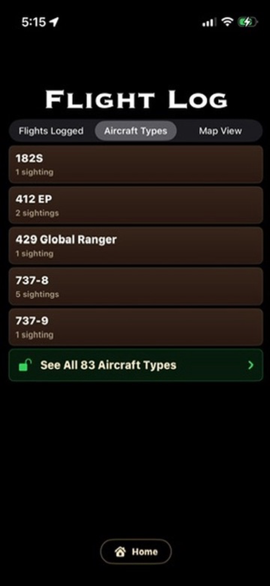
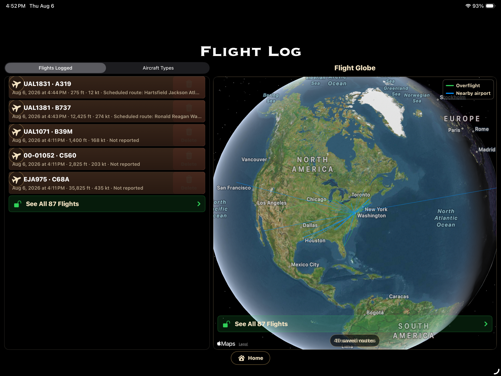

Estimated live identification
See possible aircraft matches in the camera view, with readiness gauges for heading, data, and pitch.
For iPhone and iPad. Live identification requires internet, location, camera, and nearby ADS-B coverage.
AR AIRCRAFT SPOTTING · FLIGHT IDENTIFICATION
Eye on the Sky is an augmented reality aircraft-spotting companion for iPhone and iPad. Point your device toward the sky to see estimated aircraft markers, explore available flight details, and save the sightings that catch your attention.
No account. No ads. Premium is a one-time purchase—no subscription.

FROM SKY TO SIGHTING
Turn a passing aircraft into a saved part of your spotting history in seconds.
Tap Identify Aircraft and point your iPhone toward the sky.

Estimated AR markers show nearby aircraft with available flight and route details.
Hold the center aim on a marker for one second to add it to your flight log.

Revisit flights, discover aircraft types, and trace available routes around the globe.

MORE THAN A FLIGHT FINDER
See possible aircraft matches in the camera view, with readiness gauges for heading, data, and pitch.
Explore available callsign, route, altitude, speed, aircraft type, registration, distance, and location information.
Keep the aircraft you spot in one history and reopen any saved sighting to revisit its available details.
See which aircraft models you have encountered and how many times each type appears in your collection.


Keep encrypted sighting history in sync across your Apple devices through your private iCloud account. No Gobsmacked account is required.
Open available provider, aircraft-reference, and photo links, or have the app speak available details while you keep your eyes on the sky.
TRY PREMIUM
New users receive five days of introductory Premium access. After that, Eye on the Sky remains useful for free, while an optional one-time purchase unlocks full saved history and unlimited detailed aircraft identifications. No subscription is required.
After introductory access, the free tier includes five saved-history entries and five new detailed identifications per day.
THE NEXT FLIGHT IS OVERHEAD
Identify estimated nearby aircraft, learn what you are seeing, and build a personal record of the sky above you.